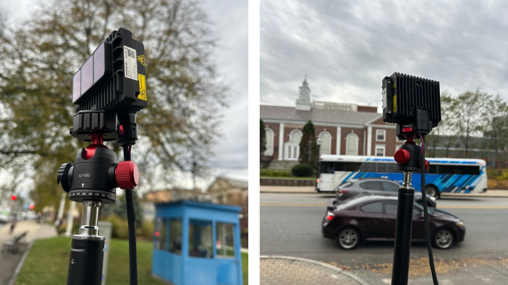
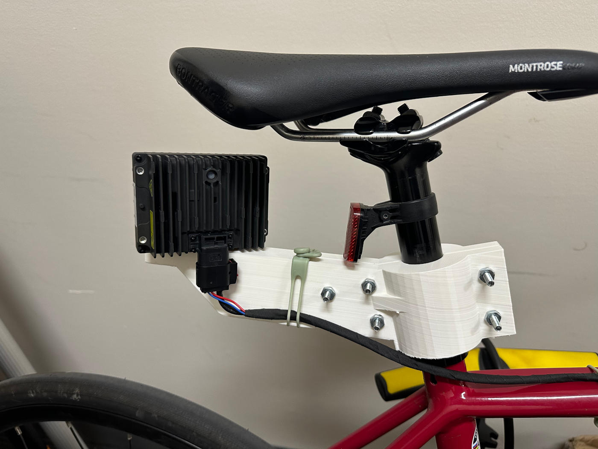

BENTO: Bundled Environmental & Navigation Traffic Observer
Project Timeline: 2025-2028 (Ongoing)
Links
Compact, portable sensing unit combining LiDAR and RGB or thermal camera on a small-footprint SBC-based platform.
Description
BENTO is a lightweight, modular sensing system designed for traffic and road-user observation in constrained environments. It focuses on co-located LiDAR and camera sensing in a compact enclosure suitable for rapid deployment.
The system is intended for research, field experiments, and pilot deployments where size, power, and setup simplicity matter.
Key Characteristics
- Compact form factor
- LiDAR + RGB or thermal camera
- SBC-based (edge-capable)
- Portable and low power
- Designed for outdoor deployments
Deployment Scenarios
- Roadside or intersection observation
- Temporary traffic studies
- Vehicle-mounted sensing
- Bicycle-mounted experiments for driver behavior analysis

Bicycle equipped with prototype solid-state LiDAR data collection system to study driver behavior near cyclists
Technical Features
- Multi-modal sensor fusion (LiDAR + Camera)
- Edge computing capabilities
- Weather-resistant enclosure
- Battery-powered operation
- Real-time data processing
- Wireless data transmission
Applications
- Traffic flow analysis
- Pedestrian and cyclist safety studies
- Infrastructure monitoring
- Smart city initiatives
- Transportation research